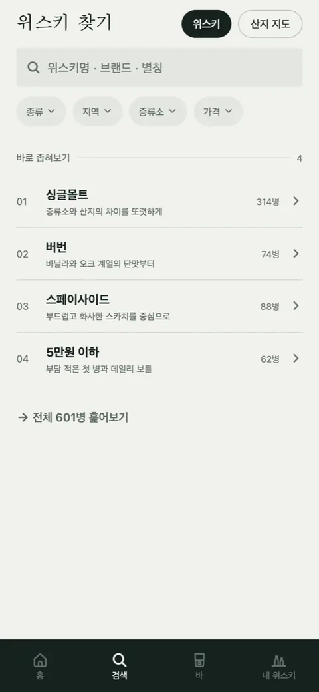

첫잔 [8] — 앱에 숫자를 적지 않기로 했다
검색 첫 화면을 둘러보기 화면으로 바꾸면서 맨 아래에 "전체 629병 훑어보기"라고 적었습니다. 그 줄을 보다가 지웠습니다. 병 수만이 아니라, 앱 안의 개수를 전부.
629는 누구에게 큰 수인가
우리에겐 큰 수입니다. 손으로 464병을 모으고 식약처 수입신고에서 87병을 골라 붙이고 마트를 돌며 채운 숫자니까요. 그런데 위스키를 좀 마셔 본 사람은 Whiskybase에 병이 수십만 종 있다는 걸 압니다. 그 사람에게 629는 "아직 이것밖에 없구나"입니다. 숫자는 자랑처럼 적었지만 읽는 쪽에서는 한계 고백이었습니다.
같은 이유로 산지 지도의 "360병 · 12 증류소·브랜드"도, 검색 결과 위의 "결과 116건"도, 필터 시트 옵션 옆에 붙은 괄호 숫자도 지웠습니다. 검색 결과 수가 116이면 많아 보이지만, 사람이 찾는 병 하나가 그 안에 없으면 116은 아무 위로가 안 됩니다.
| 있던 것 | 지금 |
|---|---|
| 전체 629병 훑어보기 | 전체 훑어보기 |
| 결과 116건 | 결과만 보여 준다 |
| 스페이사이드 (n) | 스페이사이드 |
| 360병 · 12 증류소·브랜드 | 지도만 |
| 접근성 라벨 "필터, 결과 116건" | "필터" |

세는 건 정렬에만
개수를 아예 안 쓰는 건 아닙니다. 어떤 종류에 병이 많은지는 여전히 셉니다. 다만 그 수로 타일의 순서를 정할 뿐 화면에 적지 않습니다. 사용자는 "싱글몰트가 앞에 있네"까지만 보고, "싱글몰트 n병"은 못 봅니다. 순서에는 정보가 있고 숫자에는 비교가 있습니다.
이건 확인 안 된 스펙은 비워 둔다는 규칙과 같은 쪽에 있습니다. 모르는 도수는 빈칸으로 두고, 확인 안 된 가격은 안 적고, 가진 병의 수도 말하지 않습니다. 앱이 말하는 것은 전부 우리가 보증할 수 있는 것이어야 하고, "많다"는 우리가 보증할 수 있는 말이 아닙니다.
남긴 규칙
종류·맛·산지·가격·증류소별 병 수를 화면에 적지 않는다. 세는 건 정렬에만 쓴다.
마음에 걸리는 것
접근성 라벨에서도 개수를 뺐는데, 이건 눈으로 보는 사람과 화면 읽기로 듣는 사람을 같게 대하려는 결정이지만 듣는 사람에게는 손해일 수 있습니다. 눈으로는 결과 목록의 길이가 대충 보이는데 귀로는 "결과"라는 말밖에 없으니까요. 지금은 일관성 쪽을 택했고, 이게 맞는지는 화면 읽기를 쓰는 사람이 써 봐야 압니다.

Seok
연구하면서 개발합니다. 배터리 재료를 원자 단위에서 계산하는 법을 바닥부터 배우는 중입니다. → 글 더 보기